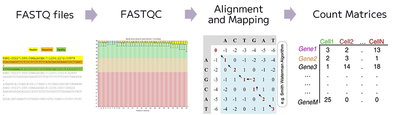
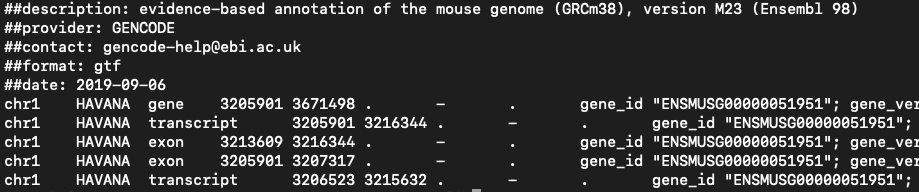
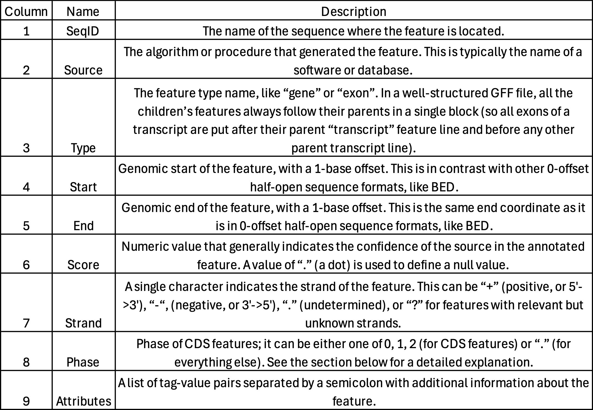
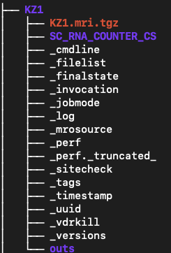
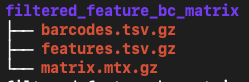
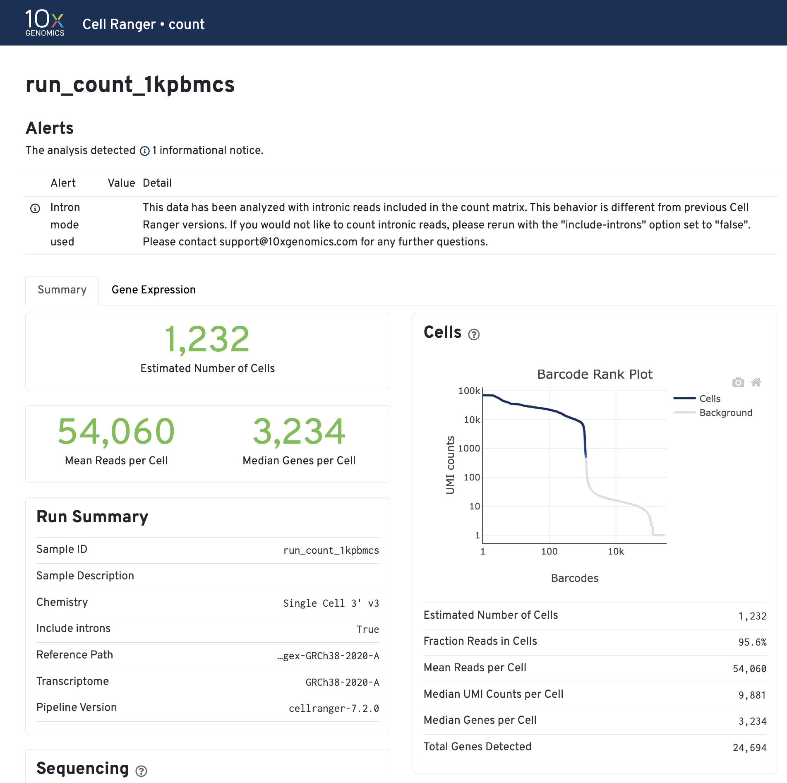
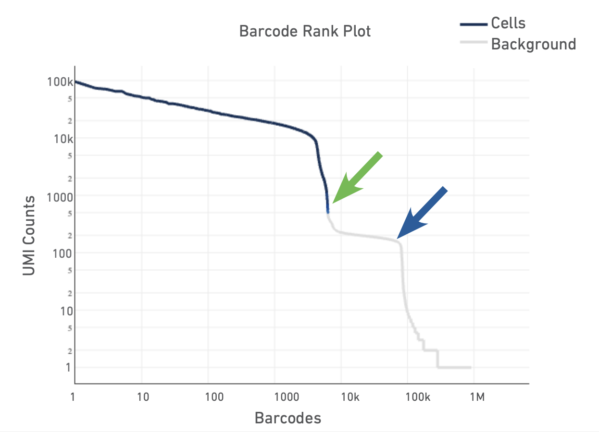
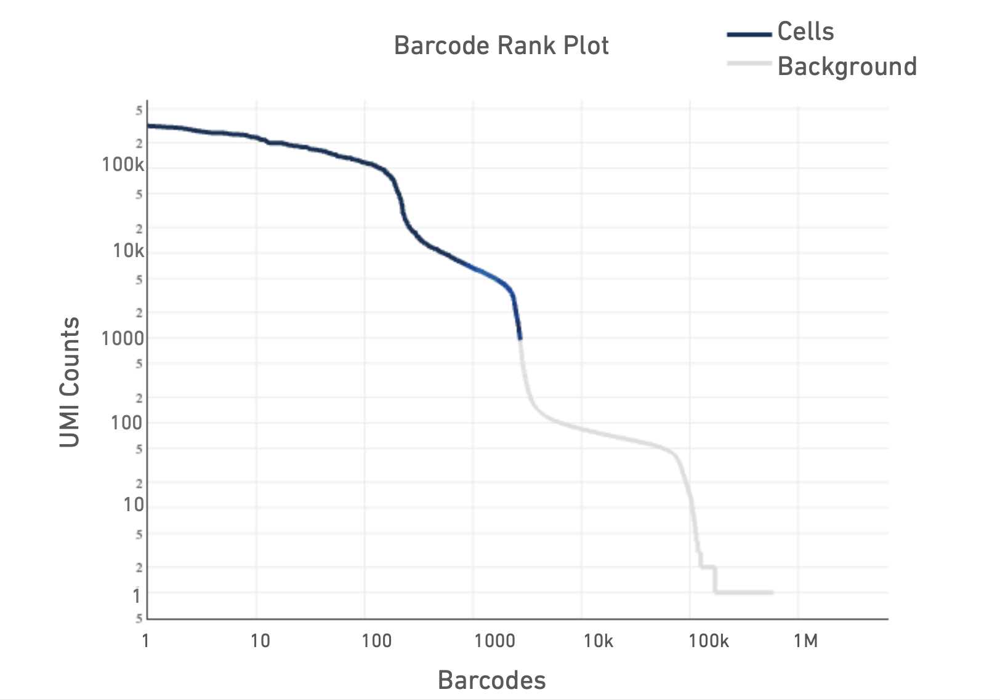
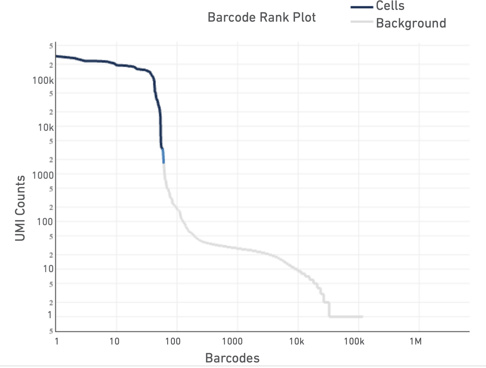
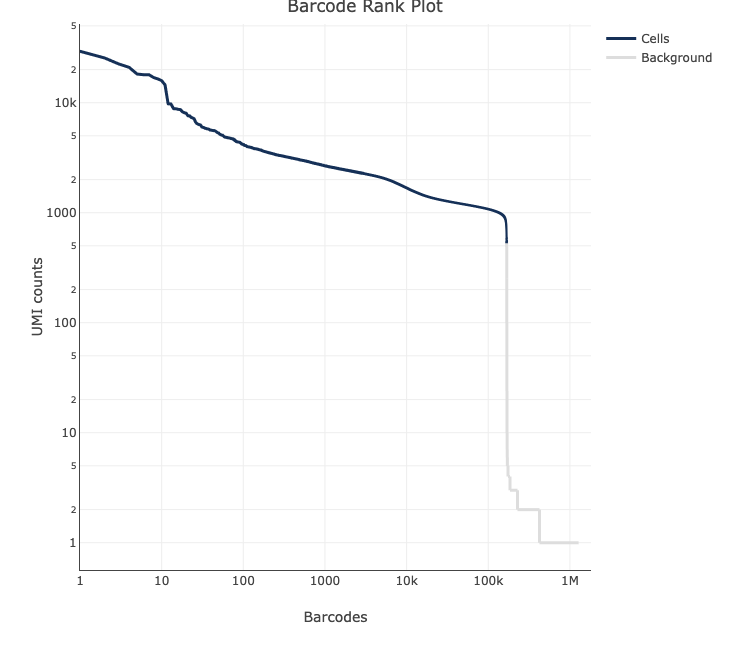

Cell Ranger for scRNA‑seq
This session walks you through Cell Ranger software for 10x Genomics Gene Expression data. It covers prerequisites, genome references (including making a human reference with
mkref), preparing FASTQs, runningcellranger count, and interpreting key outputs. Commands are provided as Bash chunks you can run on Linux. Adjust paths and resource flags to match your system.
1. Introduction
Single cell RNA-seq workflows are typically broken into three stages: primary, secondary, and tertiary analysis. Primary analysis handles the initial processing of raw sequencing output, including assigning reads to samples based on their barcode indices and trimming the reads. Then the reads are aligned to a reference and a quantitative measures of gene expression is generated as a count matrix. Secondary analysis involves dimensionality reduction and clustering, and finally tertiary analysis centers on interpreting the data biologically, most of the time through annotating the cells and performing differential gene expression testing and enrichment analyses such as GO or gene set enrichment.
There are several analysis pipelines developed to perform the primary analysis step of the single cell data analysis and your choice sometimes depend on the method by which the library was generated:
STAR solo: This tool is built into the general purpose STAR aligner and generates outputs very similar to Cell Ranger minus the cloupe file and the QC report (see below). The advantage over Cell Ranger is that it is much less computationally intensive and will run with lower memory requirements in a shorter time.
Alevin: This tool is based on the popular Salmon tool for bulk RNAseq feature counting and performs pseudoalignment, and therefore, it is significantly faster. Currently alevin supports the following single-cell protocols: Drop-seq, 10x-Chromium v1/2/3, inDropV2, CELSeq 1/2, Quartz-Seq2, sci-RNA-seq3.
CellRanger: A set of analysis pipelines developed by 10X (Cell Ranger actually uses STAR under the hood). This software does not only perform the alignment and feature counting, but will also call cells (i.e. filter the raw matrix to remove droplets that do not contain cells), generate a useful report in html format, which will provide some QC metrics and an initial look at the data, and generate a “cloupe” file, which can be opened using the 10x Loupe Browser software to further explore the data.
CellRanger is computationally very intensive because it performs both primary and secondary analysis steps. As a result, it cannot be run on a standard laptop or desktop computer; you will need access to a high-performance computing (HPC) cluster. Since we are working with 10x Chromium–derived data, we will use CellRanger for this workshop. For detailed instructions, please refer to the CellRanger documentation on the 10x Genomics website.
However, because secondary analysis requires careful tuning of parameters specific to each dataset, we do not recommend relying solely on CellRanger’s automated results. Instead, we will carry out the secondary and tertiary analysis steps using relevant R packages on Day 2 and 3 of the workshop.
You can also run 10x Genomics single cell pipelines with 10x Genomics Cloud Analysis, creating a free account. he analysis pipeline has some limitations, but usually performs well. You need to download your output within 3 months.
From FASTQ File to Count Matrix

In bulk RNA-seq experiment, we usually run some QC checks on fastq files containing reads, then map the reads to a reference genome, and finally generate a count matrix for every gene across each sample. In single cell RNA-seq experiment, similarly, we generate a count matrix that represents the number of counts for every gene across each profiled cell in the experiment.
For scRNA-seq data processing, we need these three components before we can start with the secondary and tertiary analysis:
- Sparse Matrix (MTX file) represents the count data in a compact format.
- Cell Metadata containing barcode information.
- Gene List that includes gene names and IDs.
Prerequisites
We will be looking at the count tool of the CellRanger software to align the sequencing reads against the reference genome of your organism, quantify gene expression and call cells. To generate gene (feature) counts you will need:
- Linux environment (workstation, HPC, or cloud) with enough RAM/CPU and disk space: we will be using OSCER HPC.
- CellRanger (v8+ recommended; v9 current): it is already installed on OSCER.
- FASTQs demultiplexed from the sequencer (see “FASTQ naming”): we will provide these.
- A reference transcriptome: either prebuilt on 10x website or a custom reference you build with
mkref.
Connecting to OSCER interactively
To perform the next steps, we will connect to OSCER interactively, since we do not want to overload the login node and risk receiving a dreaded email from Dr. Henry Neeman, Director of the OU Supercomputing Center for Education & Research.
srun --partition=sooner_test --container=el9hw --cpus-per-task=2 --mem=8G --pty bash -i2. Genome References: prebuilt vs. custom
Option A: Use a prebuilt reference (easier if exist)
10x publishes prebuilt reference packages for several organisms on its website. You can simply download the latest prebuilt reference (e.g., for mouse, refdata-gex-mm10-2020-A) following the script provided below and point --transcriptome to that folder. For a detailed script for how that reference was built, you can follow the build steps on the 10 website for the references.
# Downloading refdata-gex-mm10-2020-A.tar.gz from 10x website
mkdir -p ~/refs
cd ~/refs
curl -O "https://cf.10xgenomics.com/supp/cell-exp/refdata-gex-mm10-2020-A.tar.gz"
tar -xzvf refdata-gex-mm10-2020-A.tar.gz
ls -1 ~/refs/refdata-gex-mm10-2020-AOption B: Build a custom reference with mkref
Build a custom reference if you need non‑standard genomes, extra genes (e.g., reporters), or to align with a specific Ensembl/GENCODE release. You need the reference genome for your organism in FASTA format and the transcript annotation file in GTF format. As an example, see the code below for the human reference genome release 110 on Ensembl. You can also check the instructions given on 10X website to build custom reference for more details.
# Example: set your Ensembl release and target directory
REFDIR=/path/to/referenceGenome # change the directory as you prefer
mkdir -p "$REFDIR" && cd "$REFDIR"
# Update the URLs below to the current Ensembl release if needed
wget -O Homo_sapiens.GRCh38.110.gtf.gz https://ftp.ensembl.org/pub/release-110/gtf/homo_sapiens/Homo_sapiens.GRCh38.110.gtf.gz
# Human genome FASTA (primary assembly)
wget -O Homo_sapiens.GRCh38.dna.primary_assembly.fa.gz https://ftp.ensembl.org/pub/release-110/fasta/homo_sapiens/dna/Homo_sapiens.GRCh38.dna.primary_assembly.fa.gz
# Decompress for mkref/mkgtf since mkref does not work with files compressed with gzip
gunzip -f Homo_sapiens.GRCh38.110.gtf.gz
gunzip -f Homo_sapiens.GRCh38.dna.primary_assembly.fa.gzGTF (Gene Transfer Format)


- Used for genome annotation.
- Importantly for Cell Ranger Count, only features labelled as exon (column 3) will be considered for counting signal in genes.
- Many genomes label mitochondrial genes with CDS and not exon so these must be updated.
Optional but recommended: 10x recommends filtering the GTF file so that it contains only gene categories of interest by using the cellranger mkgtf tool. Which genes to filter depends on your research question. Note that Cell Ranger does not use reads that map to multiple genes for expression (UMI) counting, so having overlapping genes in your reference will result in ignored reads. This filtering is recommended to avoid multi‑mapping from non‑polyA/non‑coding features. 10x demonstrates this with cellranger mkgtf:
# Filter the gtf file to contain only protein coding exons:
# cellranger mkgtf input.gtf output.gtf --attribute=key:allowable_value
cellranger mkgtf \
Homo_sapiens.GRCh38.110.gtf \
Homo_sapiens.GRCh38.110.protein_coding.gtf \
--attribute=gene_biotype:protein_coding
Other attributes that can be used for filtering in pre-built 10x Genomics references include:
- Protein-coding genes (
--attribute=gene_biotype:protein_coding)
- Long intergenic noncoding RNAs (
--attribute=gene_biotype:lncRNA)
- Antisense (
--attribute=gene_biotype:antisense)
- Pseudogenes (
--attribute=gene_biotype:pseudogene)
- V(D)J germline genes, for example:
--attribute=gene_biotype:IG_V_gene
--attribute=gene_biotype:TR_V_gene
Now we can create the Cell Ranger reference (this will produce a folder you pass to --transcriptome of the cellranger count).
But we will not, because it takes too long:
System requirements:. Indexing a typical human 3Gb FASTA file often takes up to 8 core hours and requires 32 GB of memory.
cellranger mkref \
--nthreads={CPUS} \
--genome=/path/to/output/genome/index \
--fasta=/path/to/GenomeFASTA/Homo_sapiens.GRCh38.dna.primary_assembly.fa \
--genes=/path/to/GenomeGTF/Homo_sapiens.GRCh38.110.protein_coding.gtfAbout “include introns”: Since Cell Ranger v7, intronic reads are included by default for whole‑transcriptome GEX, which makes a separate “pre‑mRNA” reference unnecessary for snRNA‑seq. Use --include-introns=false to count exonic reads only if you are running snRNA-seq.
3. Running cellranger count
File naming: Cell Ranger expects the Illumina convention: Sample_S1_L00{lane}_{I1|I2|R1|R2}_001.fastq.gz
Lane‑less names like Sample_S1_R1_001.fastq.gz are also accepted (v4+).
Below is a template for a single‑sample run. For more information about cellranger count function check 10x website.
# Resources (adjust to your node/request)
CORES=64
MEM_GB=128
# Run
cellranger count \
--id={OUTPUT_SAMPLE_NAME} \
--transcriptome=/path/to/output/genome/index \
--fastqs=/path/to/fastqs \
--sample={name-of-sample-as-in-fastq-files} \
--chemistry=auto \
--localcores="$CORES" \
--localmem="$MEM_GB" \
--create-bam=trueNotes:
- This script will process all fastqs in
--fastqsdir unless--sampleis used; if multiple samples share a dir, use--sampleto restrict.
--chemistry=autois the default and works for 3′ vs 5′ kits in most cases. Override only if the kit is unusual.
4. Outputs you’ll use
Cell Ranger will create a single results folder for each sample names. Each folder will be named according to the --id option in the command.

Each run creates <ID>/outs/ with (key items):

analysis: The results of clustering and differential expression analysis on the clusters. These are used in the web_summary.html report.
cloupe.cloupe: a cloupe file that can be opened in Loupe Browser for quick inspection
filtered_feature_bc_matrix: The filtered count matrix directory
filtered_feature_bc_matrix.h5: The filtered count matrix as an HDF5 file
metrics_summary.csv: summary metrics from the analysis
molecule_info.h5: per-molecule read information as an HDF5 file
possorted_genome_bam.bam: The aligned reads in bam format
possorted_genome_bam.bam.bai: The bam index
raw_feature_bc_matrix: The raw count matrix directory
raw_feature_bc_matrix.h5: The raw count matrix as an HDF5 file
web_summary.html: interactive QC summary
The two count matrix directories each contain 3 files:

barcodes.tsv.gz: The cell barcodes detected; these correspond to the columns of the count matrix
features.tsv.gz: The features detected. In this cases gene ids. These correspond to the rows of the count matrix.
matrix.mtx.gz: the count of unique UMIs for each gene in each cell.
The count matrix directories and their corresponding HDF5 files contain the same information, they are just alternative formats for use depending on the tools that are used for analysis.
The filtered count matrix only contains droplets that have been called as cells by CellRanger.
5. Understanding the QC summary web_summary.html
The cellranger count pipeline outputs an interactive summary HTML file named web_summary.html that contains summary metrics and automated secondary analysis results. It has Summary and Gene Expression tabs. For a general intro you can read this link here.

Click the ? icons next to each section title to display information about the secondary analyses shown in the dashboard.
The Barcode Rank Plot is an interactive plot that shows all barcodes detected in an experiment, ranked from highest to lowest UMI count. It is useful for understanding Cell Ranger’s cell calling algorithm to gain insight into your sample quality.
Below is a Barcode Rank Plot from a good sample:

And here are some not so good ones: 


For a more detailed explanation on the interpretation of web summary files see this info sheet from 10X.
6. Running CellRanger over OSCER using scheduler
Connecting to OSCER:
# Log into OSCER HPC using your username and password
ssh <username>@sooner.oscer.ou.edu
# activate the el9 container so that modules can be loaded
el9You should never run a program over the login node, that may cause the login node to crash and cause your and other researchers’ runs to fail. We are doing this only to verify proper installation and functioning of CellRanger on OSCER HPC. It’s always a good idea to check every component of your run before you put your sbatch file together.
# Load the cell ranger module (if you cannot remember versions, run <module spider cellranger> and it will list installed software with similar names)
module load CellRanger/8.0.1
# Check Cell Ranger is activated
cellranger --version
# To see the help
cellranger --helpTo run a software on OSCER we need to submit our jobs over a workload manager called SLURM.
Batch Jobs
#!/usr/bin/bash -l
#SBATCH --job-name=CR_single
#SBATCH --partition=el9_test
#SBATCH --container=el9hw
#SBATCH --nodes=1
#SBATCH --cpus-per-task=64
#SBATCH --mem=128G
#SBATCH --time=24:00:00
#SBATCH --chdir=/path/to/your/output/
#
#===============================================================================
set -euo pipefail
module load CellRanger/8.0.1
cd </path/to/your/output/>
s=<give your sample name here>
echo "* $(date) | START sample: $s" >> "${s}.out"
cellranger count \
--id "$s" \
--sample "$s" \
--fastqs "/path/to/fastqs" \
--transcriptome "/path/to/genome/index" \
--localcores 64 \
--localmem 128 \
--create-bam true \
--disable-ui \
--output-dir "/path/to/your/output/${s}" \
>> "${s}.out" 2>> "${s}.err"
echo "**** $(date) | DONE sample: $s" >> "${s}.out"- Resource control Cell Ranger can use most available cores/RAM; constrain with
--localcoresand--localmemto match your scheduler request.
- Disk space Keep ~3–4× input FASTQ size free for temporary files and outputs.
- FASTQ selection If a directory holds multiple samples, use
--sampleto restrict to the intended prefix. - snRNA‑seq Introns are counted by default (v7+); you do not need a pre‑mRNA reference.
- Chemistry detection By default the assay configuration is detected automatically, leave it out unless you have reason to override; if you must, set
--chemistryto one of the accepted values (e.g.,threeprime,fiveprime, etc.). - Here is the link for more on Cell Ranger Command Line Arguments.
fastq files are under: "/ourdisk/hpc/iicomicswshp/dont_archive/omics_workshop_2025/mouse_kidney_all_cells_raw_data/"
reference is under: "/ourdisk/hpc/iicomicswshp/dont_archive/master_folder/omics_class_scripts/data/sc/refs/refdata-gex-mm10-2020-A"
#!/usr/bin/env bash
#SBATCH --job-name=CR_serial
#SBATCH --partition=el9_test
#SBATCH --container=el9hw
#SBATCH --nodes=1
#SBATCH --cpus-per-task=64
#SBATCH --mem=128G
#SBATCH --time=24:00:00
#SBATCH --chdir=/path/to/your/output/
set -euo pipefail
module load CellRanger/8.0.1
cd </path/to/your/output/>
# this will run samples one after the other (serially):
# make sure there is no empty spaces or empty lines in the ids.txt
IDS="/ourdisk/hpc/iicomicswshp/dont_archive/omics_workshop_2025/mouse_kidney_all_cells_raw_data/ids.txt"
for s in $(cat "$IDS"); do
echo "* $(date) | START sample: $s" >> "${s}.out"
cellranger count \
--id "$s" \
--sample "$s" \
--fastqs "/path/to/fastqs" \
--transcriptome "/path/to/genome/index" \
--localcores 64 \
--localmem 128 \
--create-bam true \
--disable-ui \
--output-dir "/path/to/your/output/${s}" \
>> "${s}.out" 2>> "${s}.err"
echo "**** $(date) | DONE sample: $s" >> "${s}.out"
done
echo "All samples finished."
7. Other single cell technologies:
Parse Biosciences
Parse Biosciences offers an alternative strategy to 10X technology using combinatorial in-situ barcoding. If you have data from Parse Biosciences you can analyze the data on their analysis interface Trailmaker for free (with limitations). See this video to learn how to.
Illumina Single Cell 3’ RNA Prep
Illumina offers a droplet-based strategy as an alternative. See their website for more information on the approach. If you have data from Illumina droplet-based technology, you can analyze the data on their analysis interface BaseSpace DRAGEN Single Cell RNA app.
Acknowledgements & references
- 10x Genomics: official tutorials for
mkrefandcount, reference build notes, FASTQ specs, algorithm details, and system requirements.
- University of Cambridge Bioinformatics Training (Nov 2021)
- Rockefeller University, Bioinformatics Resource Centre, Single-cell RNA sequencing workshop
- workflow image is taken from Parse Biosciences website